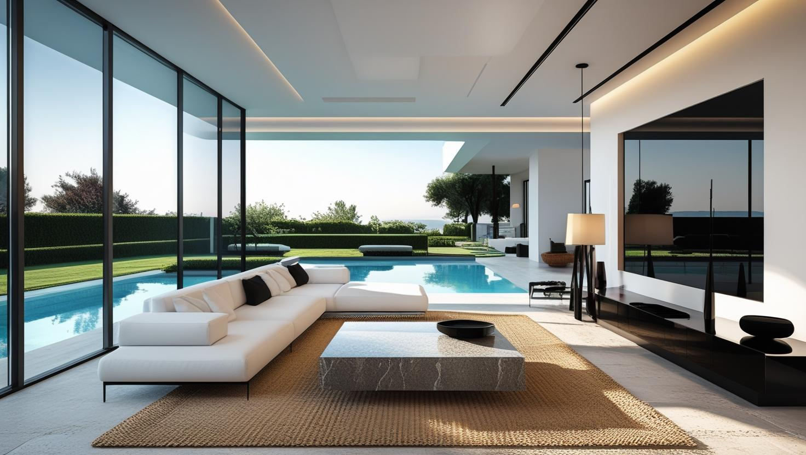
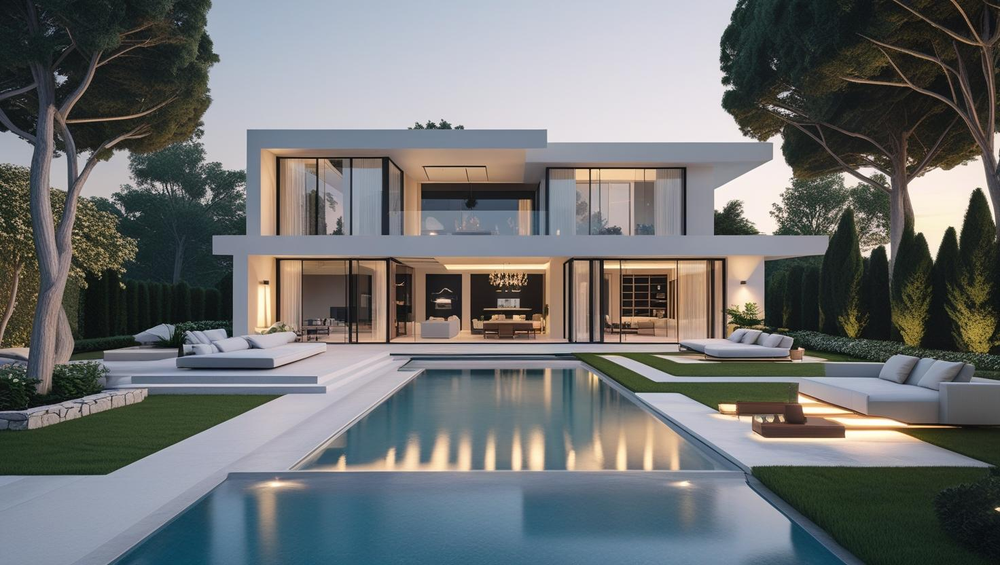
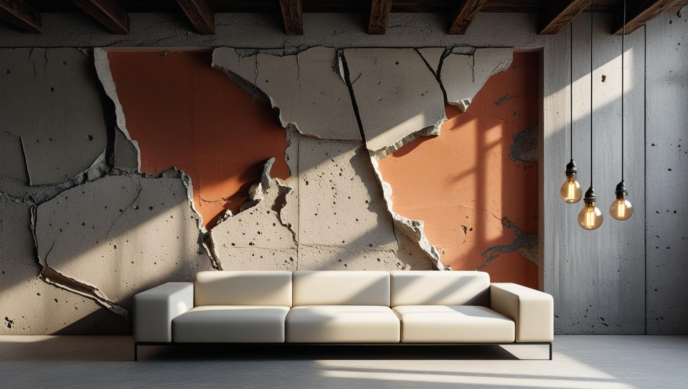

Kandilli'nin Dokusuna Saygılı Boya Hizmeti
Kandilli'de lüks konutlar, villalar ve Boğaz mimarisine sahip yapılar için titiz, estetik ve profesyonel boya çözümleri sunuyoruz.
Kandilli'de Boya Badana: Boğaz Yamacı ve Eski Konut Dokusu
Kandilli boyacı talebi Üsküdar'a bağlı bu semtin yamaç yerleşimi ve yerleşik konut dokusundan geliyor. Boğaz'a bakan eski konutlar, yüksek tavanlı daireler ve müstakil evler bir arada bulunuyor.
Suya yakınlık ve yeşil doku nedeniyle nem yükü yüksek. Kuzeye bakan ve gölge alan cephelerde yüzeyde küf ve yeşillenme eğilimi görülebiliyor; bu cephelerde temizlik ve uygun astar belirleyici.
Yamaç adreslerde araç yanaşma ve malzeme taşıma işin planına giren gerçek bir kalem. Kandilli boya ustası keşfinde bunu yerinde değerlendiriyoruz.
Kandilli Lüks Konut Boyama Hizmetlerimiz

Lüks Daire & Villa İç Cephe
Mekanınızın atmosferini, ışığını ve mimarisini öne çıkaran, kusursuz yüzeyler ve renkler yaratıyoruz.
- Pürüzsüz duvar hazırlığı ve uygulama
- Minimalist ve klasik renk danışmanlığı
- Kokusuz, sağlıklı premium boyalar
- Temiz ve titiz iş teslimi

Villa & Konak Dış Cephe
Boğaz'ın yıpratıcı iklimine karşı, yapınızın estetiğini koruyan, uzun ömürlü dış cephe çözümleri sunuyoruz.
- Nem ve UV korumalı premium boyalar
- Ahşap ve taş yüzey koruma sistemleri
- Yosun ve mantar önleyici uygulamalar
- Doğal dokuyla uyumlu renkler

Sanatsal & Dekoratif Uygulamalar
Standartların ötesine geçerek mekanınıza kimlik ve karakter katan özel tasarım boya ve doku çalışmaları.
- İtalyan dekoratif boya ve sıvalar
- Beton, mermer ve eskitme efektleri
- Tek duvar (accent wall) tasarımı
- İç mimarlarla uyumlu proje desteği
Neden Kandilli'de İstanbul Boyacılık?
Boğaz Hattı Tecrübesi
Kandilli'nin mimari dokusuna ve beklentilerine hakim, deneyimli ve uzman ekip
Detaycı ve Titiz İşçilik
İşin temelini oluşturan altyapı hazırlığı ve pürüzsüz bitişlerdeki hassasiyet
En Üst Kalite Malzemeler
Mekanınızın değerine değer katan, en iyi ithal ve yerli markalar
Güven & Mahremiyet
Müşteri gizliliğine ve yaşam alanınızın huzuruna saygılı çalışma prensibi
Kusursuz Eşya Koruma
Değerli mobilyalarınız, zeminleriniz ve peyzajınız bize emanet
Memnuniyet odaklı hizmet
İş sonunda her odayı sizinle birlikte gözden geçiriyor, rötuşları teslimden önce yapıyoruz
Kandilli Boyacı Ustası: Zarafete ve Değere Adanmış Hizmet
Boğaziçi'nin en nezih semtlerinden Kandilli'de boyacı ustası arayışı, estetik anlayış, malzeme bilgisi ve en önemlisi, bölgenin eşsiz mimari mirasına derin bir saygı gerektirir. İstanbul Boyacılık olarak biz, bu seçkin bölgede sunulan boya hizmetinin, sadece bir badana işlemi olmadığının bilincindeyiz. Kandilli'nin Boğaz'a nazır villalarından, tarihi dokulu konaklarına ve modern dairelerine kadar her mekana, kendine özgü karakterini öne çıkaran bir zanaatkarlıkla yaklaşıyoruz. Amacımız, premium boya uygulamalarıyla mekanlarınıza sadece renk katmak değil, aynı zamanda değerini korumak ve artırmaktır.
Kandilli Çevresi: Üsküdar'dan Beykoz'a Boğaz Kıyısı Semtleri
Kandilli boyacı ustası olarak Kandilli'de ve Anadolu yakasının Boğaz hattındaki semtlerde hizmet veriyoruz:
Hizmet Verdiğimiz Yakın Bölgeler
- Kandilli
- Vaniköy
- Çengelköy
- Beylerbeyi
- Kuleli
- Anadoluhisarı
- Paşabahçe
- Kanlıca
- Küçüksu
- Kuzguncuk
- Üsküdar Sahil Hattı
- Beykoz
Faydalı Bağlantılar
Kandilli bölgesinde premium iç cephe veya dekoratif boya planlıyorsanız fiyat, metrekare hesabı ve marka seçimi rehberlerini birlikte incelemek daha sağlıklı karar verir.
Kandilli'de teklif neden keşiften sonra veriliyor? Eski konutlarda ahşap doğrama ve pervaz gibi aksamın durumu ile iç ve dış cephenin birlikte mi ayrı mı ele alınacağı yerinde görülmeden işin kapsamı netleşmiyor; bu nedenle burada metrekare fiyatı paylaşmıyoruz. Keşif ücretsizdir ve not ettiğimiz her kalem yazılı teklifte ayrı bir satır olarak gösterilir.
Kandilli'de kapsamı büyüten kalemler yamaç adreste malzeme taşıma, yüksek tavanlı eski dairelerde artan yüzey alanı ve nem gören cephelerde çıkan temizlik ile hazırlık işi.
Keşiften önce kabaca bir bütçe fikri edinmek isterseniz 2026 ev boyama fiyatları yazımızdaki 1+1, 2+1 ve 3+1 aralıklarına bakabilirsiniz. Boğaz hattı dışındaki semtler de dahil tüm hizmet alanımız İstanbul boyacı hizmet bölgeleri sayfasında yer alıyor.
Sıkça Sorulan Sorular
Kandilli'de yamaçtaki evler, ahşap aksam ve nem gören odalarla ilgili merak edilenler
Kandilli'nin eski konutlarında dikkatimiz önce neme ve mimari detaylara gidiyor. Suya yakınlık ve yeşil doku nemi yükselttiği için nem gören odalarda boyadan önce yüzeyi temizleyip uygun astar sürüyoruz. Ahşap işçiliği ve kartonpiyer gibi detayları bozmadan çalışıyor, alçı ve macun altyapısına özen gösteriyoruz. Mobilya ile zeminleri koruyor, klasik ya da minimalist renk seçimini sizinle birlikte yapıyoruz.
Kandilli'de teklifi keşiften sonra veriyoruz, çünkü ahşap doğrama ve pervazların durumu da, iç ve dış cephenin aynı işte mi ayrı ayrı mı yapılacağı da yerinde görülmeden netleşmiyor. Yamaçtaki adrese malzemenin taşınması, yüksek tavanlı eski dairelerin geniş yüzeyi ve nem gören cephelerdeki temizlik tutarı büyütüyor; dış cephede iskele gerekip gerekmediği de hesaba giriyor. Keşif ücretsiz, her kalem yazılı teklifte ayrı satırda yer alıyor.
Uygun düşebilir; önemli olan yapının karakterine göre seçim yapmak. Eski bir Boğaz evinde parlak ya da metalik efektler yerine mat bitiş, hafif eskitme veya patina gibi sakin dokular ahşap aksamla daha kolay uyum sağlar. Doku ve rengi keşifte, evdeki ahşap doğramanın tonuna bakarak birlikte seçiyoruz.
Evet, ekibimiz İstanbul'un birçok prestijli semtinde lüks konut, villa ve rezidans projelerinde görev almış, bu konuda detaylı işçiliğe ve müşteri beklentilerine hakim, tecrübeli ustalardan oluşmaktadır.
Eski konutta ahşap detaylar nasıl ele alınıyor?
Ahşap yüzeyde önce eski katmanın durumu değerlendiriliyor; zımpara ve uygun astar aşaması ayrı bir kalem oluyor. Nemli ve gölge alan konumlarda ahşabın bakım aralığı daha kısa; bunu keşifte belirtiyoruz.
Yamaçtaki eve keşif için gelebiliyor musunuz?
Gelebiliyoruz. Araç yanaşma imkânını ve taşıma mesafesini keşifte yerinde görüyoruz; bu, işin gün sayısını etkilediği için baştan teklife yansıtılıyor.
Nem gören odada hangi hazırlık yapılıyor?
Önce nemin kaynağı değerlendiriliyor. Yüzeydeki küf uygun şekilde temizleniyor, ardından duruma uygun astar uygulanıyor. Kaynağı duran bir nem sorununda hiçbir boya beklenen ömrü vermiyor.
Kandilli Müşteri Yorumları
"Kandilli'deki evimizin boyası için İstanbul Boyacılık ile çalıştık. Özellikle ahşap yüzeylerdeki hassasiyetleri ve genel olarak gösterdikleri profesyonel tutum bizi çok memnun etti. İşini bilen bir ekip."
Mehmet Koroğlu
Kandilli / İstanbul
"Boğaz manzaralı villamızın iç cephe boyası için titiz ve güvenilir bir ekip arıyorduk. Tavsiye üzerine ulaştık. Gizliliklerine, temizliklerine ve işlerine olan hakimiyetlerine hayran kaldık. Ferah ve aydınlık bir yaşam alanı yarattılar."
Defne Arslan
Vaniköy / İstanbul
"Eski konağımızın rutubet alan duvarları için doğru boya ve tekniği bulmak önemliydi. Ekibin bilgi birikimi sayesinde nefes alan, su itici özellikli boyalarla sorunu çözdük. Güvenle tavsiye edebileceğimiz bir firma."
Prof. Dr. Ozan Bilginer
Çengelköy / İstanbul
İletişim
İşletme merkezi: Orta, Demirkapı Cd. No:1, 34030 Bayrampaşa/İstanbul
İşletme merkezini Google Haritalar’da görüntüleyin
İletişim Bilgileri
Telefon: 0507 832 29 12
E-posta: boyaustamistanbul@gmail.com
10+ Uzman Ustamızla Kandilli ve tüm İstanbul'a hizmet veriyoruz
Çalışma Saatleri: 7/24 (Pzt-Paz 00:00-23:59)